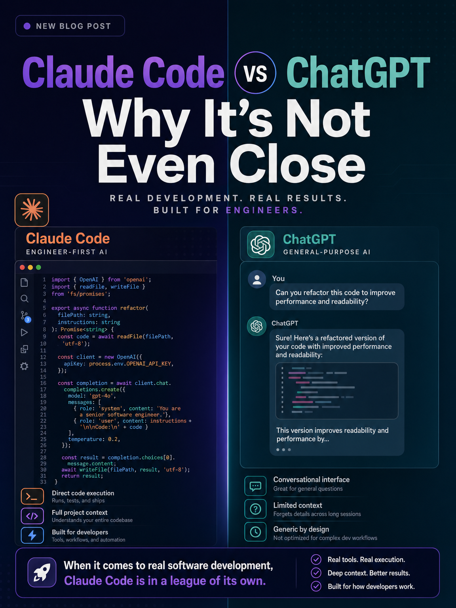

Claude Code · AI Tools · Non-Technical
I built a database that knows more about my own life than I do. Every person I've ever had a meeting with has their own profile — what we talked about, decisions we made, things I forgot to follow up on, topics for next time. It tracks the evolution of my relationships. I built it in a weekend without writing a single line of code.
This is what one week with Claude Code looks like, since I was shortlisted to join two Claude hackathons as a participant. And once you see it, you can't unsee it.
Here's the cleanest way to explain the difference.
ChatGPT
You ask, it answers. If you want to actually do something with that answer — paste it into a doc, build a slide, send an email — that's still on you.
Claude Code
You give it access to your tools and files, and it executes. One sentence and it pulls notes, scans for action items, checks your calendar, drops the brief in the right folder.
One sentence — "I have a meeting with Sarah tomorrow, prep everything I need" — and Claude Code pulls last meeting's notes, scans for unresolved action items, checks your agenda, drops a brief into the right folder. ChatGPT gives you a generic checklist. Claude Code shows up to the meeting prepped.

Chatbots inform. Claude Code operates. That's the line that matters. One is a conversation. The other is a coworker. For the full side-by-side, see our Claude Cowork vs Claude Code comparison.
The most exhausting part of using AI is re-prompting the same context every single time. Tone, format, your preferences, the things you don't want it to do. It's like training a new intern every morning.
Skills kill that problem.
A Skill is a saved process. You teach Claude Code how you do something once, and it runs that way forever. I have one called /plan my day. When I run it in the morning:
It's not generic productivity advice. It's my productivity logic, automated. I'm essentially cloning my own thinking process and letting it run on repeat. You can build a Skill for anything you do more than twice — writing in your voice, doing research a specific way, drafting client emails, ideating content. Once you understand Skills, the practical use cases multiply fast.
Skills handle the how. But they're only as useful as the knowledge they can reach.
I keep everything in Obsidian — book notes, meeting notes, half-baked ideas, random thoughts I'd otherwise lose. When I connected Claude Code to it, something genuinely unexpected happened: it started building my brain's Wikipedia.
Every note gets connected. Ideas sitting in different folders for months suddenly link up. It surfaces gaps — you wrote about X here, but you never finished the thought you started in this other note. It organises files the way I taught it to. It finds patterns I couldn't see myself.
If you have ADHD, you know the feeling — ideas firing in 40 directions, none of them landing anywhere. Now there's a place to see the branches. The thoughts have somewhere to go.
This is the part most people miss. Claude Code isn't just a faster ChatGPT. It's the connective tissue between everything you already know.
None of this happens unless Claude Code can talk to your tools. That's what MCP servers are — think of them as plugins. Install the Notion plugin and Claude can read and write to your Notion. Install Google Calendar and it can check your schedule and create events.
My current stack:
Claude Code sits in the middle — central brain, every dot connected. I can ask "what video should I make this week?" and it pulls recent YouTube performance, cross-references my idea notes, checks how much editing time I have on the calendar, and recommends something realistic and likely to perform. Try doing that with vanilla ChatGPT.
Two weeks in, here's the real assessment.
Where it genuinely shines:
Where it still trips:
On safety: don't feed it bank details, confidential client information, or anything sensitive. Treat it like a capable contractor, not a vault.
If your work involves information, planning, or writing — yes. This is the biggest leverage shift I've seen since the smartphone, and the people who get fluent with it now will look like a different category of professional in twelve months.
If you just want to ask quick questions and get answers, ChatGPT is fine for that.
For everyone in between: the setup is easier than the name suggests. Download Claude Code, get the subscription, and — this is the useful part — you can ask Claude Code to help you set it up. It walks you through everything. No coding required.
Your next step: pick one process you do every week that drains you. Just one. A weekly report, a content planning ritual, a client follow-up sequence. Write down the steps the way you'd explain them to a new hire. That's your first Skill. Build that, and you'll get it. If you want to start with the workflow and tool-connection side first, the Claude Cowork for Beginners guide is a good entry point.
Stop re-prompting from scratch every morning. Start encoding how you work instead.
Cowork SG is where Singapore professionals share what's actually working — hands-on walkthroughs, no jargon, always free.
Join Cowork SG Free →